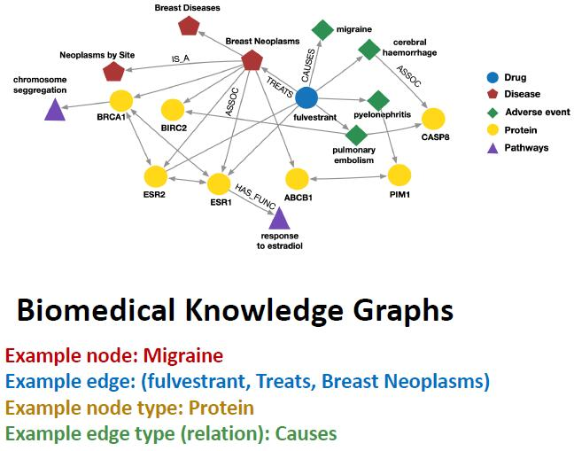
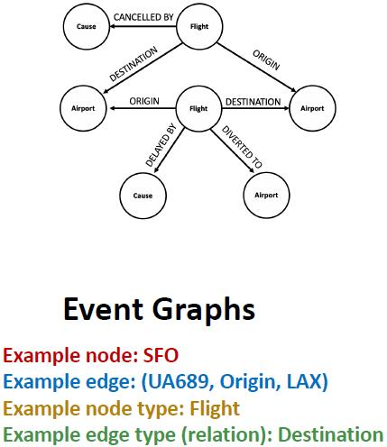

# 异质图
# 背景
在先前的研究中，研究的图中边的种类是唯一的。如果图中具有不同种类的节点和不同种类的边，那么该图称为一个异质图 (heterogeneous ghaphs).
我们主要讨论三种异质图：
- 关系图卷积神经网络 (Relational GCNs)
- 知识图谱 (Knowledge Graphs)
- 知识图谱补全 (Embeddings for KG Completion)
# 定义
一个异质图 (heterogeneous graph) 定义为一个四元组
G=(V,E,R,T)
其中，
- 具有不同类型的节点 vi∈V;
- 具有不同关系的边 (vi,r,vj)∈E;
- 节点类型映射为 T(vi);
- 关系类型 r∈R.
由此可见，异质图的主要特征是具有不同类型的边。
# 例子
生物医学知识图谱 (Biomedical Knowledge Graphs) 是一个异质图。

事件图 (Event Graphs) 也是一个异质图。

# 关系图卷积神经网络
# 基本 GNN 回顾
首先，让我们回顾基本的 GNN 架构。基于 MPNN 框架，GNN 的每一层可以分为下面两个过程：
- 消息传递：各节点计算获得的信息
mu(l)=MSG(l)(ht(l−1)),u∈N(v)∪{v},
- 聚合：聚合邻居信息
hv(l)=AGG(l)({mu(l),u∈N(v)},mv(l)).
GCN 的一层可以表示为
hv(l)=σ⎝⎛W(l)u∈N(v)∑∣N(v)∣hu(l−1)⎠⎞.
如果放到 MPNN 框架中，那么就将权重系数项放到求和内，即
hv(l)=σ⎝⎛u∈N(v)∑W(l)∣N(v)∣hu(l−1)⎠⎞,
其中
W(l)∣N(v)∣hu(l−1)
项为消息计算，而求和为聚合过程。
那么很自然就能联想到，对于不同的边，赋予不同的权值就可以处理异质图了。
# 定义
我们将关系图卷积神经网络 (Relational GCN, RGCN) 的一层公式化表述为
\boldsymbol{h}_v^{(l+1)} = \sigma\left(\sum_{r \in R}\sum_{u \in N_v^r}\frac{1}{c_{v,r}}\boldsymbol{W}_r^{(l)}\boldsymbol{h}_{u}^{(l)} + \boldsymbol{W}_0\^{(l)}\boldsymbol{h}_v^{(l)} \right).
它显然也是位于 MPNN 框架下的，消息包括基于邻居节点的消息 mu,r(l)=cv,r1Wr(l)hu(l) 和自环 \boldsymbol{m}_v^{(l)} = \boldsymbol{W}_0\^{(l)}\boldsymbol{h}_v^{(l)}, 聚合仍然是求和。
# 可扩展性
RGCN 的可扩展性 (Scalability) 可能是一个问题。对于每一类关系，需要层数 L 个权重矩阵 Wr(1),Wr(2),…,Wr(L). 其中，每个权重矩阵 Wr(l) 的大小 d(l+1)×d(l) 与嵌入维度有关。对于一般的问题，关系数目可能是 103 或 104 级别，嵌入维度是 102 级别，且各矩阵可能是稠密的，因此参数过多，训练困难。下面，我们采用两种方式降低 RGCN 的参数数量。
# 利用块对角矩阵
将参数矩阵强行转化为块对角矩阵 (block diagonal matrices) 是一种降低参数的方法。这样存在的问题是，参数矩阵难以捕捉较远距离的两节点关系，但是可以通过多次消息传递解决。
假设将参数矩阵均分为 B 个对角块，那么参数数量将从 d(l+1)×d(l) 降低到 B×(d(l+1)/B)×(d(l)/B).
# 基学习
另一个降低参数的方式是实现多关系的权重共享，通俗地说就是将不同关系的权重矩阵分解为更基本的基，然后将权重矩阵表示为基矩阵的线性组合，因此得名基学习 (basis learning). 公式表述为
Wr=b=1∑BWrbar,bVb
其中 Vb 是所有关系所共享的基矩阵，ar,b 是基矩阵 Vb 对关系 r 的权重。
这里依赖的一个基本假设是，不同关系是相关的。因此，相关程度的高低决定参数压缩的程度。假如所有的权重矩阵线性独立，那么该方法将无法实现参数压缩。
# 例子
RGCN 解决的任务包括两类：实体分类（节点分类）和链路预测。
对于实体分类问题，注意到 RGCN 的输出向量 hv(L) 可以表示节点特征，因此此类任务是显然可完成的。
对于链路预测问题，样本关系很有可能是不均衡的，因此在训练时需要进行预处理，使得每种类型的边出现在训练集的数目相同。关于最后的输出，需要权重矩阵一些 Wri. 对于节点 A,B, 可以给出一个边属于关系 ri 的概率
fri(hA(L),hB(L))=hA(L)WrihB(L).
我很怀疑这样预处理的正确性... 抽空再看看原本的 paper. 但这部分与目前的研究不太相关，因此后续再说。
# 知识图谱与知识图谱补全
# 知识图谱
知识图谱 (Knowledge Graph, KG) 包括三个基本组成要素
- 实体 (entities): 图上的节点
- 类型 (types): 实体（节点）可以具有的类别
- 关系 (relationships): 节点之间的边
知识图谱有两个基本特征：
- 庞大 (massive): 拥有 millions 级别的节点和连边；
- 不完全 (incomplete): 许多事实知识对应的边可能不出现在知识图谱中。
# 知识图谱的边表示
知识图谱中的边可以表示为一个三元组 (h,r,t), 分别为
- 头实体 (head entity): 边的起点
- 关系 (relation): 边的类型
- 尾实体 (tail entity): 边的终点
换句话说，箭头是从头指向尾的。所以箭头那边是尾节点。
对于不同的关系，头尾之间的紧密程度可能是不同的。衡量紧密程度可以通过嵌入的方式，一种经典的方法称为 TransE.
# TransE
我们希望边的三元组均找到嵌入，即对于 (h,r,t), 分别定义其嵌入为 h,r,t∈Rd, 且当对应事实存在时，希望满足
h+r≈t,
否则希望
h+r=t.
这样，打分函数可以定义为
fr(h,t)=−∥h+r−t∥.
算法的具体细节不再赘述，仍然是基于负采样和梯度下降的算法。
# 缺陷
# 知识图谱中的关系模式
在知识图谱中，可能蕴含有不同性质的关系模式。例如：
- 对称性 (symmetry): 假如有边为 (h,"Roommate",t), 则边 (t,"Roommate",h) 也存在；
- 逆关系 (inverse relation): 假如有边 (h,"Advisor",t), 则应该有 (t,"Advisee",h) 存在。
显然，TransE 并不能有效区分这两种不同的关系。
特殊的关系大概包括以下几类：
- 对称 / 反对称 (symmetric/antisymmetric) 关系：
r(h,t)⇒r(t,h)r(h,t)⇒¬r(t,h),∀h,t.
- 逆 (inverse) 关系：
r2(h,t)⇒r1(t,h)
- 组合 / 传递 (Composition/Transitivity) 关系：
r1(x,y)∧r2(y,z)⇒r3(x,z)∀x,y,z
- 一对多 (1 to N) 关系：
r(h,t1),r(h,t2),⋯,r(h,tn) are all true.
显然，TransE 不能建模上述关系中的对称关系和一对多关系，可以有效建模反对称、逆、传递关系。
# TransR
注意到，如果将上面提到的问题转化到一个更高维度的空间中，那么对称和一对多就可以表示了（这两者在本质上是统一的）。
TransR 就是采用此思想基于 TransE 的改进。通过乘一个高维矩阵，将其线性变换到另一个空间中作 TransE.